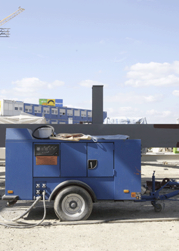

Den Kompressor außerhalb des Verkehrsbereiches und außerhalb von
Schadstoffquellen aufstellen.
Die Ansaugung von schadstoffangereicherter Luft muss ausgeschlossen sein.
Den Kompressors nicht in schlecht belüfteten Räumen aufstellen oder den Auspuff
gegen eine Gebäudewand richten, damit er nicht das eigene Abgas ansaugt.
Es ist auf entsprechend geringe Schallabstrahlung zu achten. "Flüsterleise" Kompressoren arbeiten mit einem Schalldruckpegel von ca. 60-65 dB(A).